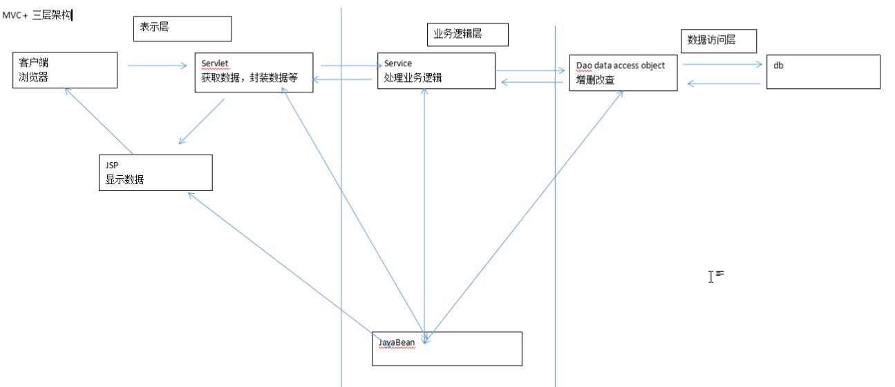

EL&JSTL&MVC
EL表达式的概述
全称是Expression Language
主要作用：
可以获取域对象中的数据并输出
执行运算并将结果输出
获取WEB开发中的常用对象
格式${}
注意：没有数据，EL表达式会输出空白字符，并不会输出null
原理：EL表达式获取域对象中的数据并输出，使用的pageContext的findAttribute()方法。在pageContext,request,session,application四个域对象中查找数据并输出，如果没有查找到对应的数据输出的是空字符串
EL表达式获取并输出其他类型的对象
自定义类需要getset选择器EF才能获取到具体参数
map中key不能以数字开头
1 | <% |
使用EL表达式进行运算并输出结果
使用EL表达式进行运算并输出结果
EL表达式表达支持算数运算，比较运算，逻辑运算，三元运算等等
empty：判断域对象当中是否有指定的属性，乳沟没有返回true，有则返回false
EL表达式内置对象的概述
- PageContext pageContext 是JSP页面的上下文对象，代表了JSP页面
- Map pageScope 封装了pageContext域对象的数据
- Map requestScope 封装了request域对象的数据
- Map sessionScope 封装了session域对象的数据
- Map applicationScope 封装了application域对象的数据
- Map param 封装了表单提交的数据，Map的value类型是String
- Map paramValues 封装了表单提交的数据，Mpa的value类型是String[]
- Map header 封装了请求头，Map的value类型是String
- Map headerValues 封装了请求头，Map的value类型是String[]
- Map cookie 封装了客户端带来的cookie
- Map initParam 封装了WEB应用的初始化参数
测试EL表达式的内置对象
1 | <% |
JSTL的概述
全称是JSP Standard Tag Library,JSP标准标签库
JSTL由开源组织Apache所提供和维护
JSTL主要作用是一处JSP页面中的Java代码，
JSTL提供了一系列的标签库，主要使用JSTL的核心标签库
使用步骤
将JSTL的相关jar包导入到WEB-INF/lib
在JSP页面中使用taglib指令导入标签库
在JSP页面中使用标签库里的标签
IF标签
属性：
如果test为false 则标签体不会执行
如果为true 则标签提执行
var if标签将test属性的值设置到域对象中，var属性的值，就是域对象中数据的name
scope 范围
1 | <c:set var="num" value="5" scope="page"></c:set> |
choose标签
判断域对象中username的值是否等于lxiaochi，如果是则显示欢迎登录，否则显示用户名错误！
1 | <c:set var="username" value="lxiaochi" scope="session"></c:set> |
forEach标签
主要作用是对数组对象或者集合对象进行遍历的操作，通常和EL表达式组合使用，
forEach标签所便利的通常是域对象中的数据对象或者集合对象
属性
items 设置要遍历的数组对象或者集合对象
var 设置域对象中属性的名称
1 | <% |
开发模式(模型)
模式一
JSP + JavaBean
JSP 获取数据，封装数据，显示数据，控制流程跳转，处理业务逻辑
JavaBean 增删改查
模式二(MVC)
JSP + Servlet + JavaBean
JSP 显示数据
Servlet 获取数据，封装数据，传输数据（域对象），控制流程跳转，处理业务逻辑
JavaBean 增删改查
MVC三层架构
表示层
业务逻辑层
数据访问层

案例环境搭建
展示所有的学生信息
搭建环境
创建新的项目
导入相关的jar包
导入相关的工具类
导入相关的配置文件
准备数据库，表结构
模拟数据
开发
domain
servlet
service
dao
.jsp
测试
1 | create database mvc_test; |
案例环境实现
1 | public class StudentServlet extends HttpServlet { |
1 | <table border="1" width="500"> |